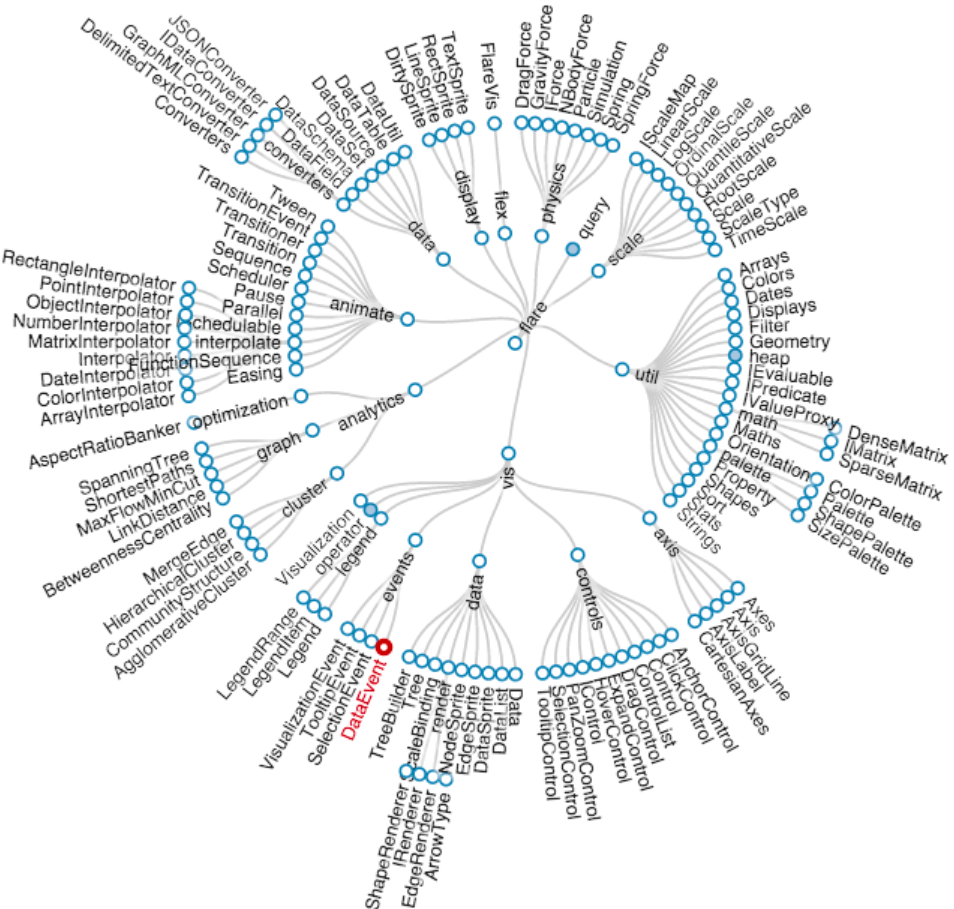

Analyse
Die Analyse-Phase dient dazu, sich einen Überblick zum Thema "Botanischen Garten" zu schaffen
und Inspiration für mögliche Vertiefungsbereiche, Visualisierungen, Datensätze & Farbschema zu sammeln. Daraufhin wird der Fokus auf ein Vertiefungsberich gelegt.
Mindmap
Datensätze
GADM
Stellt GeoDaten in Form von GeoJSON Dateien für unterschiedliche Länder bereit.Verfügt über verschiedene Detail-Grade der Regionen (Land, Bundesländer, Region, usw.).
Link
ULM Datenportal
Datenportal mit Einträgen zu Wetterstationen, Bodenfeutigkeit, Luftqualitätssensoren & Wassertemperatur in Ulm.Link
Wetterdaten: Konstanz
Datenstz zur Wetterstation 02712 in Konstanz. Enthält Daten zur Temperatur, Druck, Niederschlag, Sonnenscheindauer, usw..Link
Baumbestand: Bielefeld
Datensatz zum Baumbestand in Bielefeld. Enthält informationen zur Position, Baumart, Stamm- & Kronnendurchmesser, Baumhöhe.Link
Baysics Portal
Bayerisches Datenportal um den Einfluss des Klimawandels auf Tiere & Pflanzen in Bayern zu beobachten & analysieren.
Datensatz besteht aus Spontan-Aufnahmen von Beteiligten.Kaum Daten verfügbar.
Link
GENESIS-Online
Enthält Einträge zur Kultivierung & Nutzung von Zierpflanzen in Deutschland (Angebaute Zierpflanzen, Zierpflanzen in deutschen Haushalten, usw.)Unzuverlässiges Abrufen von Daten.
Link
Gardens4Science
Datenbank zu Anzahl an Pflanzenindividuen & Lebendsammlungen Botanischer Gärten.Link
Universitätssammlungen
Datenbank zu verschiedenen botanischen Sammlungen (Botanische Gärten, Museen & Universitäten) in Deutschland.Link
Fragekatalog
Pflanzenarten
- Wie viele verscheidene Arten gibt es in Deutschland/Europa/Welt?
- Wie verbreitet ist jeweils eine Pflanzenart in der Welt / Land / Region?
- Wie viele Arten sind vom Aussterben bedroht/ stehen kurz vor dem Aussterben?
- Wie viele Arten sind in einem Land / Region vom Aussterben bedroht / stehen kurz vor dem Aussterben?
Pflanzen Sichtungen
- Welche Pflanzen werden am meisten / wenigsten gesichtet?
- Wie oft wurde eine Pflanzenart im Monat / Jahr / Gesamt gesichtet?
- Wie viele Pflanzen wurden pro Tag / Woche / Monat / Jahr gesichtet?
- Wie viele Pflanzen wurden in einem Kontinent / Land / Region gesichtet?
- Welche Pflanzenarten wurden in einem Kontinent / Land / Region gesichtet?
- Welches Land / Region hat die meisten / wenigsten Sichtungen?
Naturschutzgebiete / Nationalparks
- Wann wurde ein Naturschutzgebiet deklariert?
- Welche internationalen Abkommen gibt existieren zum Schutz bedrohter Pflanzenarten?
- Wie groß ist das Naturschutzgebiet?
- Wie viele Besucher gibt es pro Monat / Jahr?
- Wie viele Naturschutzgebiete hat ein Land / Region?
- Welche Arten werden im Naturschutzgebiet geschützt?
- Welchen Einfluss hat die Landwirtschaft auf Wildpflanzen?
- Wie tragen NGOs zum Pflanzenschutz bei?
Botanische Gärten
- Wann wurde der Botanische Garten eröffnet?
- Wie viele Arten sind ausgestellt?
- Wie viele Besucher gibt es pro Tag / Woche / Monat / Jahr?
- Wie viele Botanische Gärten gibt es in der Welt / Kontinent / Land?
- Wie sind die Öffnungszeiten eines Botanischen Gartens?
- Wie viele vom Aussterben bedrohte Arten gibt es im Botanischen Garten?
Bäume
- Wie viele Bäume gibt es auf einem Kontinent / Land / Region?
- Wie viele Baumarten gibt es auf einem Kontinent / Land / Region?
- Wie viele Bäume werden pro Jahr gefällt?
- Wie viele Bäume werden in einem Land / Region pro Jahr gefällt?
- Wie viele Baumarten sind vom Aussterben bedroht?
Klimawandel & Ökosystem
- Wie beeinflusst der Klimawandel bestimmte Pflanzenarten?
- Gibt es Pflanzenarten die als Indikatoren für Klimaveränderungen dienen?
- Welche Pflanzenarten haben sich an extreme Klimabedingungen angepasst?
- Welche Rolle haben bestimmte Pflanzenarten in Ökosystemen?
- Wie wirken sich invasive Pflanzenarten auf Ökosysteme aus?
- Welche Pflanzenarten sind besonders für Biodiversität wichtig?
Ökotourismus
- Wie beeinflusst der Tourismus die Erhaltung von Pflanzen in geschützten Gebieten?
- Gibt es erfolgreiche Projekte, die Tourismus & Pflanzenschutz verbinden?
- Welche Rolle spielen botanische Gärten & Naturschutzgebiete im Ökotourismus?
Pflanzen & Kultur
- Welche Pflanzenarten haben in verschiedenen Kulturen traditionelle Bedeutung?
- Wie werden Pflanzen in der traditionellen Medizin verwendet?
- Welche Rolle spielen Pflanzen in der Kultur & Geschichte in bestimmten Regionen?
Pflanzen & urbanes Umfeld
- Wie beeinflusst das urbane Umfeld die Vielfalt der Pflanzenarten in Städten?
- Welche Strategien werden eingesetzt um Grünflächen zu fördern?
- Wie tragen Pflanzen zur Luftqualität in Städten bei?
Personas
Person 1
Name: Jonas Müller Alter: 32 Jahre
Beruf: Sozialarbeiter
Interessen: Lokaler Umweltschutz, Gemeinschaftsprojekte, Radfahren
Ziele: Aktiv zur Verbesserung der städtischen Umwelt beitragen, Nachhaltigkeitsinitiativen unterstützen
Bedürfnisse: Informationen über lokale Umweltprojekte, Möglichkeiten zur aktiven Teilnahme an Umweltschutzaktionen
Techniknutzung: Aktiv in sozialen Netzwerken, liest Blogs und Artikel zum Thema Umwelt
Person 2
Name: Sarah BeckerAlter: 38 Jahre
Beruf: Teilzeit-Buchhalterin
Interessen: Familiengärtnerei, Bildung ihrer Kinder, lokale Gemeinschaftsaktivitäten
Ziele: Ihren Kindern Werte der Nachhaltigkeit und Naturverbundenheit vermitteln
Bedürfnisse: Einfache und verständliche Informationen über lokale Flora und Umweltschutz, Aktivitäten für Familien
Techniknutzung: Nutzt das Internet hauptsächlich für pädagogische Ressourcen und lokale Nachrichten
Moodboard: Visualisierungen

Moodboard: Farben

Ergebnis
Themenbereich: Biodiversität in der EU
- Darstellung der Artenvielfalt von Pflazen & Tieren in Europa
- Darstellung der verschiedene Einflüsse auf die Biodiversität, Tier- & Pflanzenarten
- Darstellung der Maßnahmen um die Biodiversität zu schützen
- Darstellung der Entwicklung von getroffenen Maßnahmen
Fragenkatalog
- Welche Länder in Europa haben die höchste Anzahl an bedrohten Pflanzenarten?
- Wie hat sich die Anzahl bedrohter Pflanzenarten in Europa über die letzten Jahrzehnte entwickelt?
- In welchen europäischen Regionen ist der Lebensraumverlust am stärksten, und wie korreliert dies mit dem Rückgang von Pflanzenarten?
- Welcher Anteil der bedrohten Pflanzenarten in Europa ist in Schutzgebieten wie Nationalparks oder Natura 2000-Gebieten zu finden?
- Wie wirkt sich der Klimawandel auf die Verbreitung von Pflanzenarten in verschiedenen europäischen Regionen aus?
- Wie haben sich Änderungen in der Landnutzung (z.B. Urbanisierung, Landwirtschaft) auf die Biodiversität der Pflanzen in Europa ausgewirkt?
- Welchen Einfluss haben invasive Pflanzenarten auf die einheimischen Pflanzenarten in verschiedenen europäischen Ländern?
- Wie hat sich der Rückgang von Pollinatoren (z.B. Bienen) auf die Bestäubung und damit auf die Verbreitung bestimmter Pflanzenarten in Europa ausgewirkt?
- Wie effektiv sind die aktuellen Naturschutzmaßnahmen in Europa bei der Erhaltung der bedrohten Pflanzenarten?
Datensatz: Natura 2000
Natura 2000 ist ein EU-weites Netzwerk an Naturschutzgebieten und ist dient dazu die Biodiversität in europäischen Union zu erhalten.
Natura 2000 ist ein EU-weites Netzwerk an Naturschutzgebieten und ist dient dazu die Biodiversität in europäischen Union zu erhalten.
- Informationen zu Naturschutzgebieten
- Informationen zu geschützten Pflanzen- & Tierarten
Personas
Name: Elsa Katinaka
Alter: 74 Jahre
Beruf: Rentnerien
Interessen:
Hobby-Gärtnerin, Liest Bücher, Zeit mit ihren Enkelkindern verbringen
Ziele:
Hat bemerkt, dass der Wasserverbrauch ihres Gartens gestiegen ist & dass es immer mehr lange dürre Zeiten gibt. Es wundert sich, dass das für einen Einfluss solches Wetter auf wilde Tiere/Pflanzen haben könnte.
Techniknutzung:
hat Erfahrung mit mobilen Applikationen durch ihren EBook-Reader, ist zuversichtlich simple Seiten navigieren zu können.
Alter: 74 Jahre
Beruf: Rentnerien
Interessen:
Hobby-Gärtnerin, Liest Bücher, Zeit mit ihren Enkelkindern verbringen
Ziele:
Hat bemerkt, dass der Wasserverbrauch ihres Gartens gestiegen ist & dass es immer mehr lange dürre Zeiten gibt. Es wundert sich, dass das für einen Einfluss solches Wetter auf wilde Tiere/Pflanzen haben könnte.
Techniknutzung:
hat Erfahrung mit mobilen Applikationen durch ihren EBook-Reader, ist zuversichtlich simple Seiten navigieren zu können.
Name: Udo Gerhild
Alter: 30 Jahre
Beruf: Biologie Lehrer
Interessen:
Spaziergänge, Tennis
Ziele:
möchte der Klasse etwas über Biosphären & Artenvielfalt beibringen. Möchte die neuen IPads der Schule verwenden. Benötigt eine Anwendung/Webseite die Interaktiv (unterhaltsam) die Wichtigkeit der Biodiversität zeigt.
Techniknutzung:
tägliche Nutzung vom Internet, Kann mit typischen und unkonventionellen Anwendungen auskommen (Schüler sind mit mobilen Geräten sehr vertraut)
Alter: 30 Jahre
Beruf: Biologie Lehrer
Interessen:
Spaziergänge, Tennis
Ziele:
möchte der Klasse etwas über Biosphären & Artenvielfalt beibringen. Möchte die neuen IPads der Schule verwenden. Benötigt eine Anwendung/Webseite die Interaktiv (unterhaltsam) die Wichtigkeit der Biodiversität zeigt.
Techniknutzung:
tägliche Nutzung vom Internet, Kann mit typischen und unkonventionellen Anwendungen auskommen (Schüler sind mit mobilen Geräten sehr vertraut)
Name: Dr. Lena Müller
Alter: 35 Jahre
Beruf: Umweltwissenschaftlerin im Bereich Biodiversität
Interessen: Forschung zur Erhaltung der Biodiversität, Entwicklung von Schutzstrategien für bedrohte Pflanze- narten, Publikation wissenschaftlicher Artikel
Ziele: Zugang zu aktuellen Forschungsergebnissen und Daten über bedrohte Pflanzenarten in Europa, Vernetzung mit anderen Wissenschaftlern im Bereich der Biodiversität, Beitrag zur Wissenschaftsgemeinschaft durch Teilen eigener Forschungsergebnisse
Herausforderungen: Beschaffung zuverlässiger und aktueller Daten, Zeitmangel aufgrund von Forschungs- und Lehraufgaben
Alter: 35 Jahre
Beruf: Umweltwissenschaftlerin im Bereich Biodiversität
Interessen: Forschung zur Erhaltung der Biodiversität, Entwicklung von Schutzstrategien für bedrohte Pflanze- narten, Publikation wissenschaftlicher Artikel
Ziele: Zugang zu aktuellen Forschungsergebnissen und Daten über bedrohte Pflanzenarten in Europa, Vernetzung mit anderen Wissenschaftlern im Bereich der Biodiversität, Beitrag zur Wissenschaftsgemeinschaft durch Teilen eigener Forschungsergebnisse
Herausforderungen: Beschaffung zuverlässiger und aktueller Daten, Zeitmangel aufgrund von Forschungs- und Lehraufgaben
Name: Simon Bauer
Alter: 28 Jahre
Beruf: Umweltaktivist, Blogger, Teilzeitstudium in Umweltmanagement
Interessen: Engagement für Umweltschutz, Bewusstseinsschaffung über die Bedrohung der Biodiversität, aktive Teilnahme an Umweltschutzkampagnen
Ziele: Informieren der Öffentlichkeit über Umweltthemen, insbesondere die Bedrohung der Pflanzenvielfalt in Europa, Förderung von Umweltschutzmaßnahmen, Vernetzung mit Gleichgesinnten und Experten
Herausforderungen: Mangel an zugänglichen und verständlichen Informationen über komplexe ökologische Themen, Bedarf an ansprechenden und teilebaren In- halten für soziale Medien
Alter: 28 Jahre
Beruf: Umweltaktivist, Blogger, Teilzeitstudium in Umweltmanagement
Interessen: Engagement für Umweltschutz, Bewusstseinsschaffung über die Bedrohung der Biodiversität, aktive Teilnahme an Umweltschutzkampagnen
Ziele: Informieren der Öffentlichkeit über Umweltthemen, insbesondere die Bedrohung der Pflanzenvielfalt in Europa, Förderung von Umweltschutzmaßnahmen, Vernetzung mit Gleichgesinnten und Experten
Herausforderungen: Mangel an zugänglichen und verständlichen Informationen über komplexe ökologische Themen, Bedarf an ansprechenden und teilebaren In- halten für soziale Medien
Visualisierungsmethodik
Im Kapitel Visualisierungsmethodik werden verschiedene Diagramm & Visualisierungsarten betrachtet,
um das im vorherigen Kapitel erarbeitete Thema visuell aufzubereiten & interaktiv zu präsentieren.
Interaktive Karte für Naturschutzgebiete
Verwendung eines simplen Tooltips für Informationen über das ausgewählte Naturschutzgebiet. Zur Rechten Seite gibt es mehr Informationen zum Naturschutzgebiet.
Ausgewähltes Naturschutzgebiet erhält eine intersivere Farbe, um es vo den restlichen Gebieten zu unterscheiden.
Ausgewähltes Naturschutzgebiet erhält eine intersivere Farbe, um es vo den restlichen Gebieten zu unterscheiden.
Interaktive Länderkarte
 Jedes Land wird entsprechend der Auswertung eingefärbt.
Jedes Land wird entsprechend der Auswertung eingefärbt.
Verwendung eines Tooltips, um Informationen zum Entsprechendem Land zu erhalten. Die Umrandung des ausgewählten Landes wird dunkler & dicker, um es von anderen Ländern zu unterscheiden.
Jedes Land wird entsprechend der Auswertung eingefärbt.Verwendung eines Tooltips, um Informationen zum Entsprechendem Land zu erhalten. Die Umrandung des ausgewählten Landes wird dunkler & dicker, um es von anderen Ländern zu unterscheiden.
Es werden die unterschiedlichen Einflussarten auf Naturschutzgebiete in ihrer Häufigkeit dargestellt.
Das Tooltip erscheint in der Mitte und liefert weitere Informationen.
Durch Klicken kann ein Bereich ausgewählt werden, wodurch dieser nach der jeweiligen Intensität unterteilt wird & die restlichen kleiner. Dabei kann das Tooltip wiederverwendet werden um mehr Informationen zu erhalten.
Das Tooltip erscheint in der Mitte und liefert weitere Informationen.
Durch Klicken kann ein Bereich ausgewählt werden, wodurch dieser nach der jeweiligen Intensität unterteilt wird & die restlichen kleiner. Dabei kann das Tooltip wiederverwendet werden um mehr Informationen zu erhalten.
Das Säulendiagramm stellt die Eröffnungen von Naturschutzgebieten pro Land in einem Jahr dar.
Das Säulendiagramm enthält eine Zeitleiste wodurch die Daten des jeweiligen Jahres ausgewählt werden können. Beim Hovern über eine Säule wird der jeweilige Wert oberhalb der Säule eingeblendet, wodurch eine Y-Achse nicht nötig ist.
Das Säulendiagramm enthält eine Zeitleiste wodurch die Daten des jeweiligen Jahres ausgewählt werden können. Beim Hovern über eine Säule wird der jeweilige Wert oberhalb der Säule eingeblendet, wodurch eine Y-Achse nicht nötig ist.
Baumdiagramm zur Artenherkunft

Zur Visualisierung von Entdeckungen & Entwicklungen, zB: Artenabhängigkeiten.
Interaktive Länderkarte
Visualisierung von Zugehörigkeit in Artengruppen Kreisgröße zeigt Anzahlen an.
Interaktive Karte für Naturschutzgebiete
 Darstellung Beziehungen zwischen Arten, Äußeren Einflüssen und dem Ökosystem.
Darstellung Beziehungen zwischen Arten, Äußeren Einflüssen und dem Ökosystem.
Darstellung Beziehungen zwischen Arten, Äußeren Einflüssen und dem Ökosystem.
Interaktive Länderkarte
Partikelsystem mit Three.js, wobie jeder Partikel eine Art symbolisiert Partikel könnten nach Art gefärbt sein
Interaktivität indem sie sich immer von Cursor weg bewegen.
Zeigt veränderung der biodiversität über die Jahre Nutzer können wie ein Slider durch gehen oder zu bestimmten Zeitpunkten
springen.